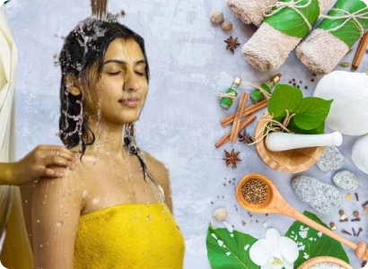
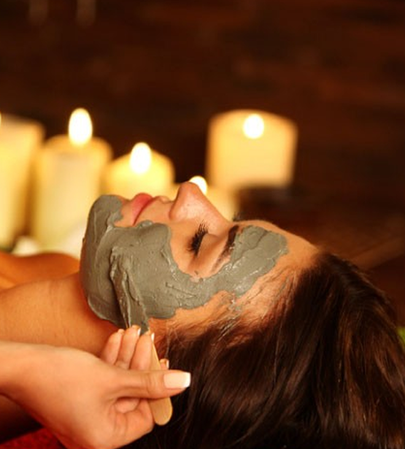
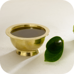
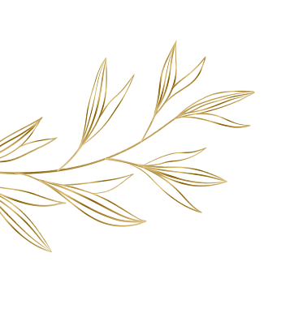

Prasoothika Ayurvedic Ritual
Postnatal Care Ritual At Home to attain Pre pregnancy state and to remove stretch marks
Price:
₹64,800
Special Offer
30
10% Discount applied. Package Validity: 90 days. Get 20% Discount on 45 Sessions Package.
Select Required Therapy:
Choose your location:
By Continuing, I Agree to Terms and Conditions
